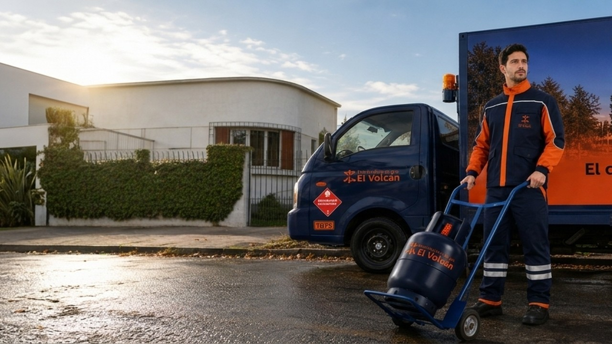

Blog de noticias y consejos
Descubre consejos de seguridad, uso eficiente de cilindros de gas licuado y novedades de Distribuidora El Volcán.
15 de agosto, 2026
Medidas clave para el uso seguro de cilindros en el hogar
Aprende a revisar conexiones, reguladores y mangueras para garantizar la máxima seguridad de tu familia.
Leer artículo
2 de agosto, 2026
Cómo optimizar el consumo de gas durante los meses fríos
Recomendaciones prácticas para calefaccionar tus ambientes de manera eficiente sin descuidar tu presupuesto.
Leer artículo